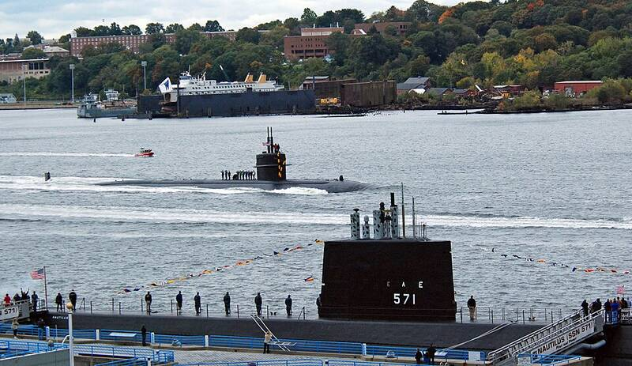

Naval Submarine Base New London
Connecticut

The Navy's primary East Coast submarine base. 1
Open in the interactive Watcher
Sources
- Naval Submarine Base New London Wikipedia
Connecticut

The Navy's primary East Coast submarine base. 1
Open in the interactive Watcher